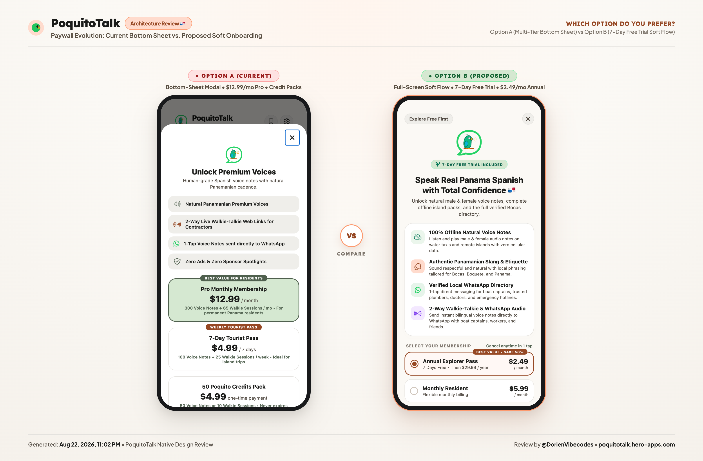
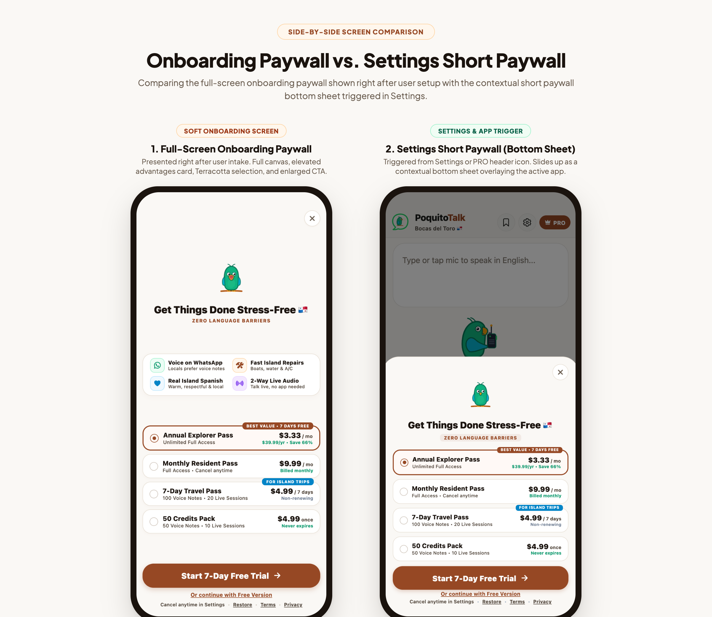

Building in the Void: What Public Teardowns, Hard Cuts, and a Caribbean Island Taught Me About Shipping
The popular version of building in public goes like this: tweet a screenshot of a rough wireframe, wake up to hundreds of DMs, watch downloads spike on launch day, and post an upward-curving revenue graph labeled "Humbled and grateful."
That was not my experience.
Over the past month, I built PoquitoTalk, a Spanish voice translation tool and verified service directory for expats, boat captains, and island tradespeople in Bocas del Toro, Panama, as part of the RevenueCat Shipaton 2026.
I shared everything from day one: raw paywall mockups on X, unedited workflows on local community boards, technical architecture, and open requests for honest critique.
Instead of viral applause, I received blunt peer critiques that dismantled my initial assumptions, forced me to cut features I spent days writing, and exposed the psychological lull that follows launch day.
Here is what the process actually looked like on the ground.
1. The Island Reality Check: Where Product Theory Breaks Down
When I first sat down to design PoquitoTalk, my mental model was clean, academic, and wrong.
Living in Bocas del Toro, an archipelago off the Caribbean coast of Panama, you quickly learn that local commerce does not run on email, web booking forms, or SMS. There are no highways between the islands. You travel by wooden water taxi (panga), depend on rainwater collection tanks, and rely on local trades to keep boat engines and solar systems running in humid salt air.
In Panama, local trade logistics happen through WhatsApp voice notes.
Boat captains navigating ocean swells or carpenters on roof framing rarely read or type text messages. Sending a textbook Spanish paragraph from Google Translate creates friction:
- The boat captain has to pull over, find reading glasses, and squint at small text in tropical sun glare.
- If they reply, they send a five-second, rapid-fire voice note ("¡Buenas! Voy saliendo de Almirante, llego en veinte...") recorded over an outboard motor roar.
- If you only know classroom Spanish, you are completely stuck.
[The Developer Assumption] ─────► "People just need a text translation box."
"They can copy-paste translated Spanish into WhatsApp."
[The Caribbean Reality] ─────► Nobody reads text while steering a boat.
Voice is culturally non-negotiable.
If the receiver has to install an app, adoption fails immediately.Early conversations with community members clarified this constraint. When I shared preliminary text-based mockups with local expats, the consensus was direct: "If it doesn't send real WhatsApp voice notes, and if the boat captain has to download anything, nobody here will use it."
That feedback redirected the project before I built further UI:
- 1-Tap WhatsApp Audio: Converts English into native
.mp3voice notes using local Panamanian phrasing. - The Zero-Install Web Walkie Bridge (
/talk): When messaging a contractor, you share a short link. The contractor opens it directly in their mobile browser without downloading an app or creating an account, taps a large green button, and speaks in Spanish. Their audio is transcribed, translated to English, and delivered back to your screen in under 400ms.
Gathering public feedback early prevented building a tool that worked in theory but failed on the water.
2. The Paywall Teardown
Posting updates on X (@DorienVibecodes) as an indie developer often feels quiet. Most days bring a handful of likes and impressions.
┌───────────────────────────────────────────────────────────────┐
│ THE BUILDING IN PUBLIC SPECTRUM │
├───────────────────────────────┬───────────────────────────────┤
│ The Social Media Myth │ The Grounded Reality │
├───────────────────────────────┼───────────────────────────────┤
│ • 5,000 likes on every mockup │ • 4 likes, but 1 deep critique│
│ • Flattering vanity metrics │ • Direct peer-to-peer insights│
│ • Performed perfection │ • Two builders teaching each │
│ • Surface-level cheerleading │ other through public code │
└───────────────────────────────┴───────────────────────────────┘Then an experienced builder named Jay reviewed my initial RevenueCat paywall designs. I had used a standard card layout, mapped out the subscription tiers, styled the buttons in our app's terracotta brand color, and assumed the value was clear.
Jay walked through the design screen by screen. We ended up in a multi-day exchange breaking down mobile conversion psychology, resulting in five specific changes:
Lesson 1: Separate Onboarding from In-App Gates
In our first iteration, whether a user had just completed onboarding or had reached their daily quota while hailing a water taxi, they saw the same full-screen modal.
The two user states require different approaches:
- The Onboarding User is evaluating value and needs clear reassurance, trust indicators, and a clean narrative.
- The In-App User is trying to finish an active task. Forcing a full-screen onboarding presentation during a workflow causes friction.
The Fix: We split our monetization flow into two dedicated React Native components:
SoftOnboardingPaywall.tsx: A full-screen canvas (#FAF8F5) featuring our mascot Poquito, a 4-benefit value overview, and 7-day trial framing.PaywallModal.tsx: A compact bottom-sheet drawer that slides up over the active screen, preserving task context and providing a quick checkout button.

paywall_evolution_before_after.png hereLesson 2: Give the Primary CTA an Isolated Color
PoquitoTalk's palette is built on Caribbean terracotta (#964824), emerald (#059669), and linen. I originally styled our primary subscription button in terracotta.
Jay pointed out that when the purchase button shares a color with category badges, icons, and tags, it blends into the rest of the interface instead of commanding attention.
At conversion, the primary action needs immediate visual contrast.
// src/components/SoftOnboardingPaywall.tsx
// We introduced an isolated accent that exists nowhere else in the app:
const styles = StyleSheet.create({
mainCtaButton: {
width: '100%',
backgroundColor: '#4F46E5', // Bright Royal Indigo - unique in the app
paddingVertical: 15,
borderRadius: 22,
alignItems: 'center',
justifyContent: 'center',
shadowColor: '#4F46E5',
shadowOffset: { width: 0, height: 4 },
shadowOpacity: 0.35,
shadowRadius: 10,
elevation: 4,
},
mainCtaText: {
fontSize: 16.5,
fontWeight: '800',
color: '#FFFFFF',
letterSpacing: -0.2,
},
});Against the warm cream background, this Royal Indigo button stands out immediately. Users cannot mistake it for a category badge or a decorative tag.
Lesson 3: Address Expiration Concerns on Credit Packs
We offer a 50-credit pack for $4.99 for tourists and short-term visitors who do not want monthly billing. Our original card read:
50 Credits Pack - $4.99 once
Jay noted that pay-as-you-go buyers hesitate because they wonder if unused credits expire after their trip ends. Adding two words in an emerald badge, "Never expires", removed that uncertainty.
Lesson 4: Replace Downgrade Language with Action-Oriented Phrasing
Under our main trial button, the dismissal link originally read:
Or continue with Free Version
Labeling it "Free Version" made opting out feel like a permanent downgrade while giving users an excuse to skip the trial. We changed the link text to:
Try it first
The phrase focuses on immediate action rather than tier status, and it fits small mobile screens without wrapping.
Lesson 5: Keep Exit Paths Intentional
Our early paywalls included both a top (X) close button and a bottom text dismissal. Two competing exit points right next to the offer split attention.
We reduced the exit paths to a single dismissal option below the card, keeping the path out obvious without cluttering the screen with competing close targets.

onboarding_vs_settings_paywall_comparison.png hereIf I had kept the designs private, I would have launched with confusing conversion paths. Working through the interface publicly improved our entire monetization flow.
3. Cutting Features You Love
The hardest part of building in public is cutting features you spent days perfecting.
Living in Panama, I fell in love with local island idioms and street expressions (jerga): phrases like "¿Qué xopa, fren?" (What's up, friend?), "tas en panga" (you're out of luck), and "arrancar" (to head out).
In early builds, I engineered a dialect selector into the main translation screen:
- Option A: Polite Panamanian Spanish ("¡Buenas! Estimado, necesito coordinar un viaje...")
- Option B: Deep Street Slang ("¡Xopa fren! Tírame una lancha pa' Carenero rápido...")
┌───────────────────────────────────────────────────────────────┐
│ THE FOUNDER'S DIALECT DILEMMA │
├───────────────────────────────┬───────────────────────────────┤
│ What I Wanted to Ship │ What Users Needed │
├───────────────────────────────┼───────────────────────────────┤
│ • 2-way Slang Switcher │ • 1 clean, reliable button │
│ • Street Slang vs Polite │ • Universal, polite Spanish │
│ • Complex cognitive choice │ • Zero risk of offending │
│ • Slower shipping velocity │ • Fast 1-tap dispatch │
└───────────────────────────────┴───────────────────────────────┘The prompt tuning took days, and the outputs were culturally spot-on. But when real testers tried it, they froze.
An expat messaging an electrician about a smoking solar inverter did not want to accidentally send street slang. Testers worried about sounding disrespectful or choosing the wrong tone. Instead of adding delight, the toggle created hesitation at the exact moment someone needed quick communication.
I removed the dialect selector and anchored the entire translation prompt to warm, respectful, natural Panamanian Spanish. Solo builders often try to demonstrate capability by packing extra toggles into an MVP. Showing early builds to real users makes it clear when a clever feature creates friction.
4. The Post-Launch Silence
Few people warn indie builders about the silence that follows shipping.
You spend weeks finishing code, clearing store reviews, configuring RevenueCat offerings, and testing offline fallbacks. The release goes live on Google Play. The web funnel deploys.
Then nothing happens.
There is no sudden spike in downloads or spontaneous wave of purchases. When you document your work publicly, that quiet period can feel magnified. It is easy to assume the product failed, close the repository, and look for another project.
[Day 1-15: The Build Rush] ────► Coding flow, shipping momentum.
[Day 16: The Release] ────► Live on Google Play.
[Day 17-25: The Silence] ────► Quiet metrics. Distribution work begins.The real challenge is maintaining momentum during that quiet stretch. PoquitoTalk was built for a specific island community, not a global App Store audience. If island residents were not finding the app through Google Play search, the distribution method needed to change.
5. Partnering with Local Hospitality
Waiting for tourists to search "Panama voice translator" on Google Play was ineffective. The communication breakdown actually starts at check-in:
- Guests arrive at an eco-lodge or waterfront hotel on Isla Colon or Isla Solarte.
- They want to hire a water taxi to Starfish Beach, confirm dinner reservations, or find a certified dive shop.
- Front-desk staff spend hours writing down phone numbers and translating identical questions on scraps of paper.
Rather than relying purely on direct App Store discovery, we brought PoquitoTalk directly to local hotels, hostels, and waterfront businesses:
┌─────────────────────────────┐
│ Bocas Hotels & Restaurants │
└──────────────┬──────────────┘
│ (Host Menu & Services)
▼
┌──────────────────┐ ┌─────────────────────────────┐ ┌──────────────────┐
│ Visiting Tourist │ ────────► │ PoquitoTalk Web / App │ ◄──────── │ Local Trades & │
│ (Scans QR Code) │ │ - Digital Hotel Menu │ │ Boat Captains │
│ │ │ - Verified Services │ │ (0-Install Audio)│
│ │ │ - 1-Tap WhatsApp Voice │ │ │
└──────────────────┘ └─────────────────────────────┘ └──────────────────┘- Digital Menu and Amenity Catalogs: Local restaurant and hotel menus live directly in the PoquitoTalk service directory so guests can read island seafood dishes in English without ordering confusion.
- Check-in QR Placements: Front desks provide a table card with a QR code pointing directly to the lightweight web funnel (
poquitotalk.hero-apps.com). - Curated 7-Day Travel Passes: Accommodations can provide a 7-day access pass as an arrival amenity, giving visitors instant WhatsApp audio translation and direct lines to verified boat captains.
Placing access points inside local hubs turns the tool into a visible part of the island's everyday transit network.
6. The Solo Founder’s Build-in-Public Diagnostic Checklist
If you are competing in a hackathon like the RevenueCat Shipaton or building an indie product in public, run your journey through these five diagnostic questions:
| Diagnostic Question | The Trap | Practical Fix |
|---|---|---|
| Who is on the other side? | Building only for the app user | Eliminate friction for the receiver (e.g. zero-install web links) |
| Are you hoarding features? | Adding 20 options to show capability | Drop complex variants to protect shipping clarity |
| How does your paywall look? | Reusing your brand theme on CTA buttons | Give the primary action an isolated color (#4F46E5) found nowhere else |
| How do you handle early silence? | Mistaking the post-launch lull for failure | Shift distribution from passive store searches to active local B2B partners |
| Why are you building publicly? | Chasing vanity likes and virality | Focus on peers who challenge your architecture and teach you something new |
What Shipping in Public Actually Delivers
Building in public will not make an app go viral on launch day. Its real value is stripping away assumptions early.
It forces you to listen to people who care about their day-to-day problems rather than your stack. It connects you with builders who will point out flaws in your paywall before you waste months on the wrong architecture. It limits feature bloat when you are tempted to delay shipping, and it pushes you to test real-world distribution channels when app store searches come up dry.
PoquitoTalk is live on Google Play and at poquitotalk.hero-apps.com. We are continuing to refine the voice models, expand the directory with island businesses, and test local check-in partnerships.
Dorien Van den Abbeele is an indie builder developing PoquitoTalk for the RevenueCat Shipaton 2026. Follow the build and island updates on X at @DorienVibecodes.